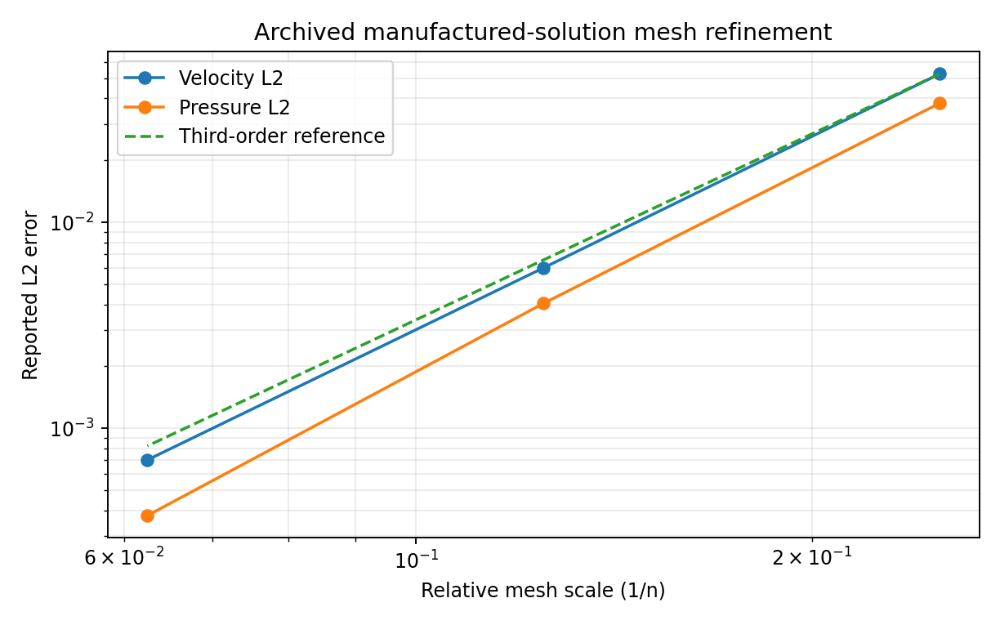
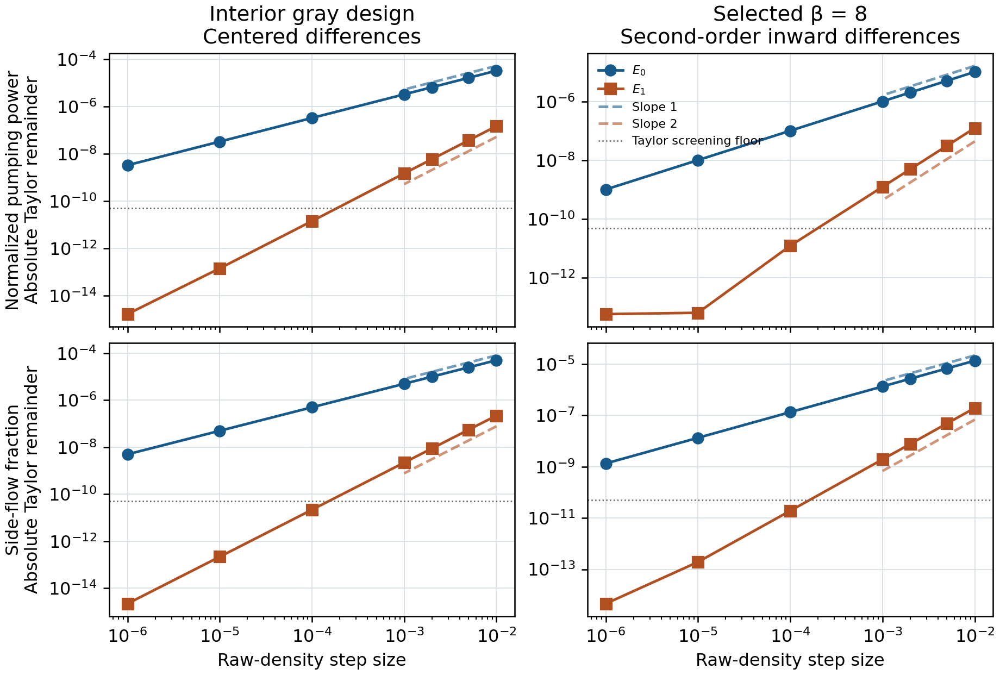
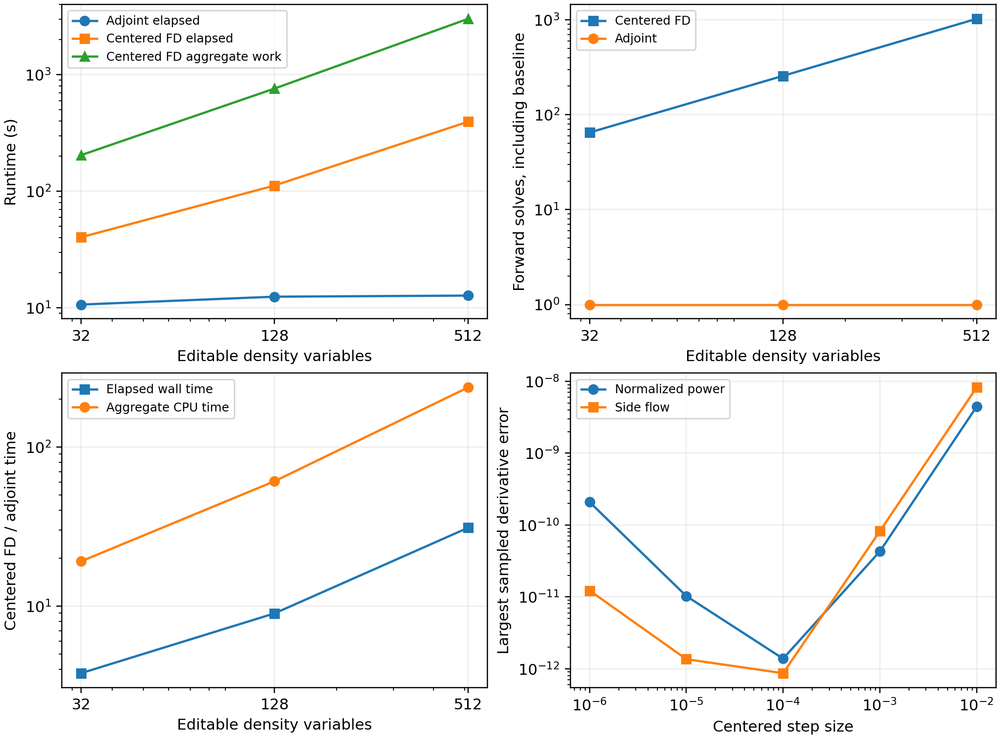
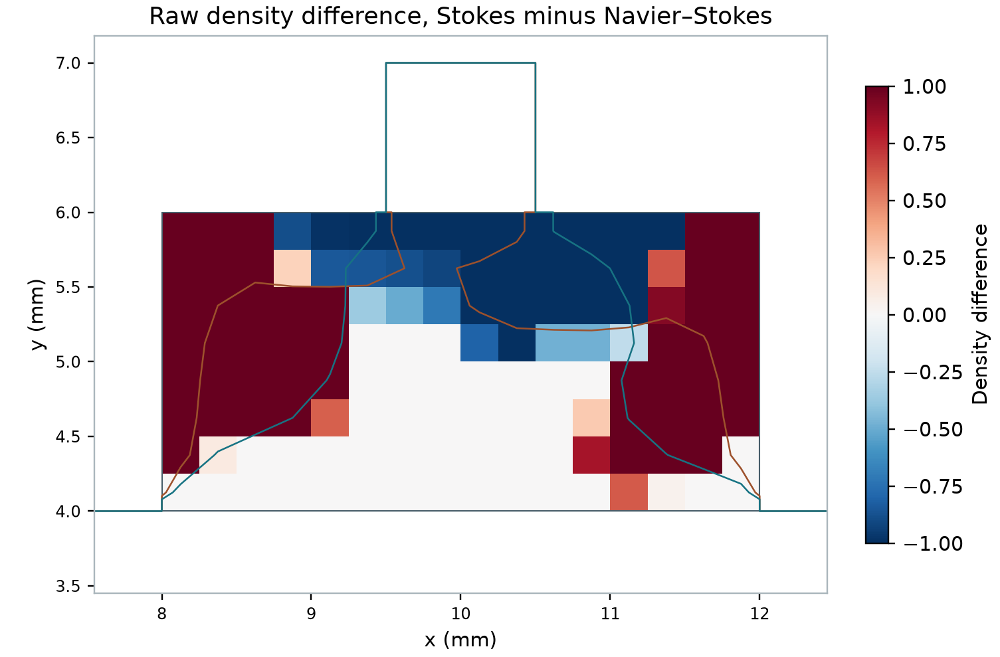
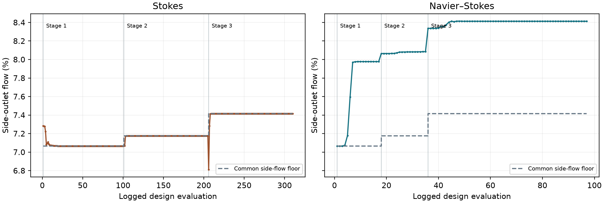
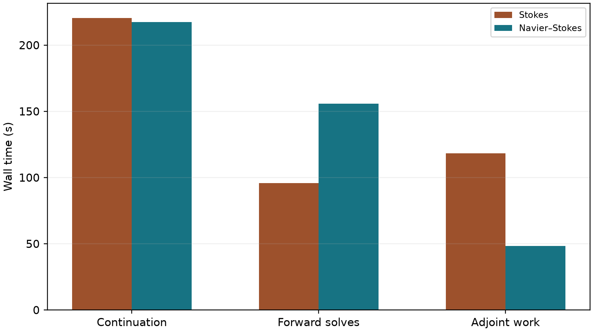
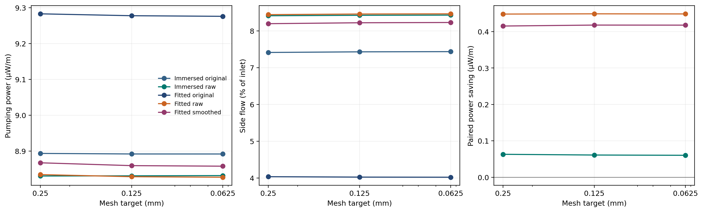
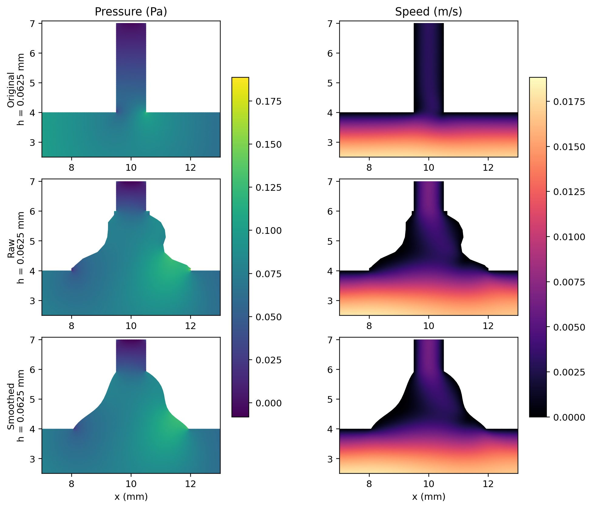

1. Summary
A sharp planar T-junction is reshaped using a 128-variable Brinkman density field and a custom Taylor–Hood finite-element solver at Re = 50. The main pipe and side outlet collar remain fixed. On the finest tested fitted-wall mesh (0.0625 mm target), the raw Navier–Stokes optimum reduces mechanical pumping power by 4.8372%, from 9.275934 to 8.827238 µW/m depth, while increasing the side-flow fraction from 4.024206% to 8.464686%. The paired mesh screen passed. The serial adjoint sensitivity benchmark showed a 60.48× speedup over complete centered finite differences. The immersed endpoint passed its KKT audit. The nonlinear design also outperforms the Stokes-optimized geometry in the same nonlinear fitted-wall evaluator. The interactive comparison above uses the archived fields and reconstructed contours. Numerical metrics refer to the finest fitted meshes; displayed fields use the coarser 0.25 mm meshes.
2. Structure and formulation
A coolant manifold distributes pumped coolant. A sharp junction can alter local losses and branch delivery. This is a planar hydraulic study, not a thermal or validated 3D study. Coordinates in mm: main pipe [0,20]×[0,4]; side collar [9.5,10.5]×[6,7]; editable region [8,12]×[4,6]; original branch [9.5,10.5]×[4,7]. The fluid reference area is 83 mm². Density cells 0.25 mm, 128 independent unitless values m_i in [0,1], 1 fluid and 0 solid. The larger 960-entry array contains fixed values; only 128 are independent. The computational union is 89 mm². Fixed cells remain anchored through filtering/projection/reconstruction.
The original immersed design replay at the same continuation stage sets both references; final beta=8 eta_ref=0.074147376839036. This is a team-selected nondegradation requirement, not an industry standard. The physical fitted reference flow is a separate validation metric, not the immersed constraint. No area or turning-angle constraint; those quantities are diagnostics. One independent PDE inequality is present; do not invent a second constraint.
Here power is W per meter depth and flow is m²/s; R_eff is Pa·s/m². The normal points outward; inlet flux is positive when defined as minus the outward integral. Port power differs from dissipation by viscous boundary work and a discrete divergence defect, both included in the energy audit.
3. Analysis and optimization slide
Steady incompressible momentum: \(\rho(u\cdot\nabla)u-\nabla\cdot(2\mu D(u)-pI)+\alpha u=0\), \(\nabla\cdot u=0\). Parabolic prescribed inlet, no slip on walls, zero total traction at both outlets. Re=50; mean inlet speed 0.01254758565 m/s; inlet flow per depth 5.01903426e-5 m²/s. Fluid properties: density 998.2 kg/m³ and dynamic viscosity 0.001002 Pa·s. P2 velocity/P1 pressure triangular elements, nonlinear Newton with the complete convection derivative \((\delta u\cdot\nabla)u+(u\cdot\nabla)\delta u\). Original analysis mesh 2,848 triangles / 13,359 DOFs. For tests \(v,q_p\), the dimensional weak residual on the free space is
The inlet velocity is \(u_x=6U(y/H)(1-y/H)\), \(u_y=0\), with \(H=4\) mm and \(U=Re\mu/(\rho H)\). No body force is applied in the manifold experiment. Pressure scale is \(\mu U/H\). The weak form is integrated over triangular elements with prescribed velocity degrees of freedom eliminated. Natural outlet traction is zero. The assembled residual includes viscous, pressure, continuity, convection and Brinkman terms.
The anchored Helmholtz mapping uses \(H=M+r_f^2K\), \(H_{EE}\tilde\gamma_E=M_E m_E-H_{EF}m_{0,F}\) for diagonal cell mass and fixed anchors; \(r_f=0.5\) mm. Projection at \(t=0.5\) uses \(\bar\gamma=[\tanh(\beta t)+\tanh(\beta(\tilde\gamma-t))]/[\tanh(\beta t)+\tanh(\beta(1-t))]\). At \(\beta=0\) it is the identity. Brinkman interpolation \(\alpha=\alpha_{max}q(1-\bar\gamma)/(q+\bar\gamma)\), alpha_max=100000 kg/(m³·s), q=0.1, beta=0,2,8. MMA iterates densities; physical contour at 0.5. Exact original raw field at start. The pilot used 100 unique-evaluation cap per stage; 97 total unique MMA evaluations reported. The final endpoint is independently audited rather than relying on the native termination flag.
Optimization loop: 128 densities → anchored filter → projection → Brinkman resistance → nonlinear FEM → port power & flow constraint → two discrete adjoints → MMA update → repeat. State variables u,p; objective and single inequality above; Re 50 is N2 nonlinear physics. The following figure shows the actual reconstructed contours.


4. Verification
The earlier solver benchmark output was recovered from the original archived Project43_searchable.txt; these are historical results, not a fresh rerun on the final executable. The benchmark definitions are present in the final source snapshot. Current fixed-pipe checks separately cover the final design's response derivatives and mesh sensitivity.
| Test | Exact/expected | Measured error or result | Archived threshold / status |
|---|---|---|---|
| V1 element basis | Kronecker interpolation, partition 1, gradient sum 0 | max defect 1.110e-16 | 1e-12; pass |
| V2 exact pipe | nondimensional flux 1 | 0.999999999999992; relative error 8.216e-15 | 1e-8; pass |
| V3 rotation | same flux 1 after rotation | 0.999999999999997; error 2.554e-15 | 1e-8; pass |
| V4 conservation | net flux defect 0 | 3.477e-14 (largest of three pipe fixtures) | 1e-10; pass |
| V5 spatial convergence | velocity order >2.6, pressure >1.7 | 3.097 and 3.422 (last interval) | pass |
| V6 nonlinear manufactured | velocity error <0.01; tangent <1e-7 | 1.701e-03; 1.076e-11 | pass |
| Uniform Brinkman | analytical flux 0.290570054755 | 0.290569429301; error 2.153e-06 | 5e-4; pass |
| Layered Brinkman | analytical flux 0.173374318848 at alpha=1600 | 0.173374495586; error 1.019e-06 | 5e-4; pass finite-penalty fixture |
| Final gradient check | FD agrees with adjoint | 15/15 directional tests; 6 follow-up Taylor tests passed | see sensitivity section |
For the straight channel, \(u(y)=Gy(H-y)/(2\mu)\) and \(Q=GH^3/(12\mu)\), with nondimensional \(G=12,H=1,\mu=1\). The manufactured field uses \(a(t)=t^2(1-t)^2\), \(u=8(a(x)a'(y),-a'(x)a(y))\), \(p=x+0.5y\) and forcing \(-\Delta u+\nabla p+c(u\cdot\nabla)u\) with \(c=0\) or 35. The exact field sets the boundary values. The reported nonlinear residual sequence is 0.0163032, 0.00235552, 1.43605e-7, 2.68584e-16. Independent team derivation of these fixtures is not documented.
Historical raw benchmark JSON · Benchmark code

5. Sensitivities
From \(R(z,m)=0\), \(R_z dz/dm=-R_m\). For each scalar F, solve \(R_z^T\lambda_F=\nabla_z F\) and compute \(\nabla_mF=F_m-R_m^T\lambda_F\). Fixed-port direct term is zero. Reverse chain includes quadrature transfer, rational interpolation derivative \(-\alpha_{max}q(q+1)/(q+\bar\gamma)^2\), projection derivative, and anchored filter transpose \(H_{EE}^T\psi=s\), \(\nabla_mF=M_E^T\psi\). The full adjoint derivation documents both port responses. For the mechanical power, a fixed-port state variation gives
The normalized objective has \(\delta f=\delta P/P_{ref}\). The flow response has \(\delta\eta=(\delta Q_{side}-\eta\delta Q_{in})/Q_{in}\), with \(\delta Q_{in}=0\) on the fixed inlet. The scaled constraint derivative is \(\nabla_m g=-1000\nabla_m\eta\). For either response the converged free-state tangent is transposed. The drag quadrature cotangent is \(-w_q u_q\cdot\lambda_{F,q}\), transferred to cells with dimensional scale \(H^2/\mu\), then multiplied by the rational derivative and the projection derivative \(\beta\operatorname{sech}^2[\beta(\tilde\gamma-t)]/[\tanh(\beta t)+\tanh(\beta(1-t))]\) before the anchored filter transpose. The fixed degrees of freedom of each adjoint are zero. One forward state plus two adjoint RHS yields both complete design gradients.
For interior feasible directions, the finite difference is \((F(m+hd)-F(m-hd))/(2h)\). At active bounds the inward second-order formula is \([-3F(m)+4F(m+hd)-F(m+2hd)]/(2h)\). The Taylor remainder \(|F(m+hd)-F(m)-h\nabla F\cdot d|\) should scale as \(h^2\) above numerical noise. The observed tests use the archived step sizes and directions; no clipping of the perturbations.
15/15 directional FD tests passed. Original Taylor order screen passed 9/15, with six flagged; larger-step follow-up passed all six (orders 2.0010–2.0060). The initial JSON's aggregate passed=false is intentional and must not be overwritten. Complete 128-variable centered gradient (257 forward solves including baseline) infinity errors: 2.376e-12 normalized power and 1.099e-12 side fraction. Serial same-node benchmark 120.379 s FD vs 1.990 s adjoint, speedup 60.48×. Scaling fixed at 52,347 analysis DOFs: 32/128/512 controls, 10.672/12.472/12.741 s adjoint and 40.339/112.083/395.261 s FD elapsed with eight workers. Distinguish aggregate work from parallel elapsed and same-node serial comparison.
| Design / direction | Best scaled power error | Best scaled side-flow error | Initial Taylor screen |
|---|---|---|---|
| original / random | 1.921e-07 | 1.372e-08 | Pass |
| original / junction_cell | 5.147e-07 | 2.707e-08 | Pass |
| original / collar_cell | 4.713e-07 | 8.587e-08 | Pass |
| gray / random | 2.280e-10 | 3.496e-11 | Pass |
| gray / junction_cell | 7.979e-09 | 7.464e-10 | Pass |
| gray / collar_cell | 1.025e-08 | 8.276e-10 | Pass |
| beta_0 / random | 1.134e-07 | 3.089e-08 | Pass |
| beta_0 / junction_cell | 1.922e-07 | 1.932e-08 | Flagged |
| beta_0 / collar_cell | 1.973e-07 | 2.291e-08 | Flagged |
| beta_2 / random | 2.142e-07 | 2.270e-09 | Pass |
| beta_2 / junction_cell | 4.351e-07 | 3.453e-08 | Flagged |
| beta_2 / collar_cell | 3.344e-07 | 3.523e-08 | Flagged |
| beta_8 / random | 2.533e-06 | 2.957e-07 | Pass |
| beta_8 / junction_cell | 3.156e-07 | 2.659e-09 | Flagged |
| beta_8 / collar_cell | 5.901e-07 | 1.789e-08 | Flagged |



6. Optimization and KKT
Final normalized objective 0.992919627; g=-9.97890521; side-flow slack 0.997891 pp. Projected stationarity 1.369e-8 vs tolerance 1e-4; primal, dual, complementarity residuals zero. 49 lower, 73 upper, 6 interior density variables. Flow multiplier 0; inactive constraint implies zero first-order local cost for a sufficiently small increase in required flow. For box bounds use \(w=\nabla f+\lambda\nabla g\), \(\|m-\operatorname{clip}(m-w,0,1)\|_\infty\). KKT is numerical first-order stationarity only, not global optimality or fitted-wall certification. The convergence history and stationarity map below are from the independent replay.
| KKT quantity | Residual | Tolerance |
|---|---|---|
| Primal | 0 | 1e-6 |
| Dual | 0 | 1e-8 |
| Stationarity | 1.369e-8 | 1e-4 |
| Complementarity | 0 | 1e-5 |


| Continuation stage | Reference power (µW/m) | Selected power (µW/m) | Reference side (%) | Selected side (%) |
|---|---|---|---|---|
| 0 | 8.922988 | 8.860219 | 7.064579 | 7.977077 |
| 2 | 8.914472 | 8.853471 | 7.175007 | 8.084346 |
| 8 | 8.893614 | 8.830644 | 7.414738 | 8.412628 |
The final row supplies the actual immersed objective and flow constraint comparison; the fitted-wall values are independent engineering validation rather than the optimizer objective.
7. Nonlinearity: Stokes versus Navier–Stokes
Removing convection from momentum and its Jacobian makes the fixed-density Stokes state linear; keep the same inlet, design mapping, common final side floor and objective including kinetic transport. Both endpoints pass KKT. Stokes satisfies the immersed constraint under its own evaluator, but fails under nonlinear evaluation (6.990948% vs 7.414738% floor). Navier–Stokes optimum gives 8.412628% under nonlinear immersed evaluation. Under identical nonlinear fitted-wall evaluation, Stokes delivers 1.948290% side flow and 9.105665 µW/m, while NS gives 8.464686% and 8.827238 µW/m. The NS optimum consumes 3.06% less power than Stokes and increases side share by 6.516397 pp. Paired descriptive uncertainties 0.013075 µW/m and 0.022710 pp; all three fitted geometries pass mesh screens. The Stokes geometry fails to preserve the original fitted side flow. The raw density mean absolute difference is 0.61866, symmetric-difference area 2.078946 mm². Stokes area 86.228145 mm², turn 88.247971° vs NS 85.506975 mm², 54.678079°. The observed total times 220.520 s Stokes/217.466 s NS reflect different evaluation counts (300/97) and environments, not intrinsic solver speed. The complete cross-evaluation is shown below.
| Design | Evaluator | Power (µW/m) | Side flow (%) | Common immersed floor |
|---|---|---|---|---|
| original | stokes | 10.200410 | 7.545020 | Pass |
| original | navier stokes | 8.893614 | 7.414738 | Pass |
| stokes optimized | stokes | 10.117120 | 7.414742 | Pass |
| stokes optimized | navier stokes | 8.907379 | 6.990948 | Fail |
| navier stokes optimized | stokes | 10.279525 | 9.204333 | Pass |
| navier stokes optimized | navier stokes | 8.830644 | 8.412628 | Pass |






| Nonlinear fitted evaluation | h (mm) | Power (µW/m) | Side (%) |
|---|---|---|---|
| original | 0.25 | 9.282894 | 4.038784 |
| original | 0.125 | 9.277632 | 4.027304 |
| original | 0.0625 | 9.275934 | 4.024206 |
| navier_stokes | 0.25 | 8.834575 | 8.443024 |
| navier_stokes | 0.125 | 8.828640 | 8.459634 |
| navier_stokes | 0.0625 | 8.827238 | 8.464686 |
| stokes | 0.25 | 9.113994 | 1.947624 |
| stokes | 0.125 | 9.106854 | 1.941523 |
| stokes | 0.0625 | 9.105665 | 1.948290 |
8. Results and numerical qualification
| Geometry | Power µW/m | Resistance Pa·s/m² | Side % | Area mm² | Wall turn ° |
|---|---|---|---|---|---|
| Original fitted | 9.275934 | 3682.284 | 4.024206 | 83.000 | 90.000 |
| Raw NS fitted | 8.827238 | 3504.165 | 8.464686 | 85.507 | 54.678 |
| Smoothed fitted (provisional) | 8.858017 | 3516.383 | 8.229312 | 85.458 | 55.558 |
| Stokes fitted (NS evaluator) | 9.105665 | 3614.692 | 1.948290 | 86.228 | 88.248 |
All rows finest 0.0625 mm. Raw NS physical saving 0.448696 µW/m vs paired uncertainty screen 0.011197 µW/m, combined energy residual 0.001788 µW/m. Mesh criteria two successive changes <=0.5% power and <=0.020 pp side flow. Smoothed failed the coarse-medium side change 0.02505 pp; retain as provisional. Immersed primary paired screen also passes but finite resistance is not an impermeable wall. The original immersed flow differs substantially from original fitted flow. The nominal Brinkman penetration length ~0.10010 mm has ~1.60 finest target intervals; avoid claims of resolved zero leakage. No matched-area/matched-flow control available. Increased area and changed outlet allocation mean smoothing alone cannot be credited for the entire saving. No imposed 45° limit in this model and measured maximum exceeds 45°.
| Case | h (mm) | Triangles | DOFs | Power (µW/m) | Side flow (%) |
|---|---|---|---|---|---|
| immersed-original | 0.25 | 2848 | 13359 | 8.893614 | 7.414738 |
| immersed-original | 0.125 | 11392 | 52347 | 8.892091 | 7.431694 |
| immersed-original | 0.0625 | 45568 | 207219 | 8.892020 | 7.437211 |
| immersed-raw | 0.25 | 2848 | 13359 | 8.830644 | 8.412628 |
| immersed-raw | 0.125 | 11392 | 52347 | 8.831105 | 8.424696 |
| immersed-raw | 0.0625 | 45568 | 207219 | 8.831774 | 8.429885 |
| fitted-original | 0.25 | 4132 | 19137 | 9.282894 | 4.038784 |
| fitted-original | 0.125 | 16466 | 75180 | 9.277632 | 4.027304 |
| fitted-original | 0.0625 | 65970 | 299028 | 9.275934 | 4.024206 |
| fitted-raw | 0.25 | 4338 | 20154 | 8.834575 | 8.443024 |
| fitted-raw | 0.125 | 16986 | 77570 | 8.828640 | 8.459634 |
| fitted-raw | 0.0625 | 67860 | 307548 | 8.827238 | 8.464686 |
| fitted-smoothed | 0.25 | 4236 | 19625 | 8.867440 | 8.196856 |
| fitted-smoothed | 0.125 | 16961 | 77435 | 8.859554 | 8.221901 |
| fitted-smoothed | 0.0625 | 67865 | 307533 | 8.858017 | 8.229312 |



9. Bonus, 10. limitations and AI disclosure
N2 nonlinear Newton plus implicit differentiation is supported by the historical manufactured nonlinear benchmark and final discrete derivative tests. The source snapshot and archived benchmark output are linked above; the historical benchmark has not been rerun against the final executable, so bonus eligibility is for the instructor to decide. Density topology with anchored filter/projection is another candidate, but required comparable fixed-topology control remains missing unless independently documented. No global optimum, no validated 3D, no heat-transfer or turbulence claim. No rigorous numerical error bound. ChatGPT assisted with mathematical formulation, study planning, interpretation and report drafting; Codex assisted with implementation, numerical tests, job execution and plotting. Team-specific independent derivations/checks and a verified bug in the graded FEM path have not been supplied. In the separate exploratory SST branch, a missing wall-distance configuration caused initialization failure; this is not evidence of a graded laminar-solver bug. Team confirmation is required before submission.
11. Reproducibility and references
The source snapshots, exact inputs, archived Slurm jobs and numerical outputs are included. python export_results.py regenerates the numerical JSON from frozen solver outputs; python build_site.py regenerates this page and python build_viewer.py regenerates the geometry assets. This is archive reproduction, not an independently tested single-command CFD rerun. For full numerical reproduction see the linked launchers and README files.
- Project 4 official specification
- Pilot README
- Verification README and Sol launcher
- Nonlinear investigation README and Sol launcher
- Numerical data, source map, remaining gaps
- Borrvall and Petersson (2003), Topology optimization of fluids in Stokes flow, IJNMF 41, 77–107.
12. Course compliance
The report provides the formulation, historical and final verification evidence, sensitivities, measured cost, KKT and the nonlinear comparison. Remaining qualifications: one independent PDE inequality; no comparable fixed-topology bonus control; team confirmation of independent derivations and a graded-solver bug; full end-to-end numerical reproduction not rerun. Public deployment and Canvas submission require team action.